I have spent most of my career on Dynamics 365 Finance and Operations, and for most of it the answer to "where do I write X++" has been the same: Visual Studio, on a heavy Windows machine, against one environment at a time. It works. But the tooling around X++ has not kept pace with how the rest of us write code now, and AI assistants in particular have only ever seen X++ as plain text files, not as the metadata it really is.
F&O Studio is my attempt to fix that. It is a free, open source (Apache 2.0) extension for Visual Studio Code that lets you develop X++ without Visual Studio.
It does not reimplement Microsoft's toolchain. It loads the same
pieces Visual Studio uses: the metadata API, the X++ compiler (xppc),
the label compiler, the best practice checker (xppbp), the
cross-reference database, the FinOps debugger proxy and the deployment
scripts. Projects (.rnrproj) and packages
(.axpp) use the same formats, so what you build in one
opens and builds in the other.
On top of that engine, F&O Studio adds what Visual Studio does not have: table data and SQL with query plans, performance and trace analysis, license and segregation of duties analysis, upgrade and release checks, and AI agent tools that read and write real metadata.
The current version is 0.14.0 and it is on the Visual Studio Marketplace. It is a preview, it is an independent community project, and it is not affiliated with or endorsed by Microsoft.
It is built for X++ developers on Windows who work on unified developer environments (UDE), cloud-hosted environments or VHD environments.
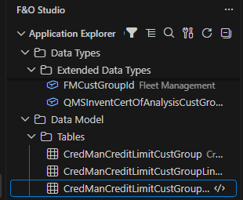
I went through the Visual Studio tooling feature by feature and
compared it with F&O Studio. The comparison has 136 rows. Here is
the short version, and the full table is at the end of this post and in
the repo (docs/comparison.md).
| Area | F&O Studio | Visual Studio |
|---|---|---|
| Open source, no Visual Studio install or license needed | Yes | No |
| Unified developer environments | Yes | Yes |
| Application Explorer, element designers, form preview | Yes | Yes |
| Chain of Command completion and navigation | Yes | Yes |
| Go to implementations, code lens, call and type hierarchy | Yes | No |
| Wizards: batch job, report, approval workflow, custom service, business event, number sequence, feature, table with form | Yes | No |
| Build, best practice checks, deployment package, deploy, database sync | Yes | Yes |
| Debugger on UDE | Yes | Yes |
| Browse table data, record inspector, SQL editor with query plan | Yes | No |
| Analyze .etl traces without a Trace Parser import | Yes | No (separate tool) |
| Static performance analysis of X++ | Yes | No |
| License analysis, Who Can Access, security gaps | Yes | No |
| Segregation of duties check and sign-off report | Yes | No |
| Upgrade readiness and standard code drift | Yes | No |
| Review My Changes and Pre-Deploy Checklist | Yes | No |
| Translate missing labels, find unused labels | Yes | No |
| Try a data entity (OData) or a service operation | Yes | No |
| GitHub Copilot chat and completions | Yes | Yes |
| 33 agent tools that work on the real metadata | Yes | No |
| Copilot checkpoints, scope and activity log | Yes | No |
| SSRS report designer | No | Yes |
| Data entity wizard | Yes | Yes |
| Dependency diagrams | Yes | Yes (DGML) |
| Debugger on cloud-hosted and VHD environments | Yes (preview) | Yes |
| Tests on cloud-hosted and VHD environments | No | Yes |
| Official Microsoft support | No | Yes |
I would rather say this up front than have you find it later.
Three features are built but not yet verified on a live environment,
so I mark them as preview: debugging on cloud-hosted and VHD
environments, which attaches the .NET debugger to w3wp.exe or Batch.exe,
the deploy and database sync tasks in tasks.json, and the
full rename flow for fields and elements inside VS Code.
The point of building on Microsoft's own components is that results match what you get in Visual Studio. F&O Studio loads these from your installation:
IMetaModelService)
for every read and write. AOT XML is never written by hand..rnrproj and .axpp
formats, so a project moves between the two IDEs unchanged.If your team has people on Visual Studio and people on VS Code, they can share the same projects.
The Application Explorer has a classic view (all models' elements by category and type) and a model view (each model by display name), both with a name filter. Click a class to open its code, a label file to open the label editor, and anything else to open its designer.
Right-click gives you the actions you expect: open designer, view code, create extension, create code extension (Chain of Command), find references, view hierarchy, view entity relationship diagram, compare code and metadata, and open in the browser. On your own models you also get Upgrade Readiness and Standard Code Drift.
Projects are optional. Create D365FO Project writes
.rnrproj and .slnx files like Visual Studio
does, and Import Project and Export
Project use the .axpp format. The project view
follows the .rnrproj, so elements added by Copilot or by
Visual Studio show up on their own, with git change markers.
Open Element (Ctrl+Alt+O) shows your
recent elements and filters by type prefix: t: for tables,
c: for classes, f: for forms.
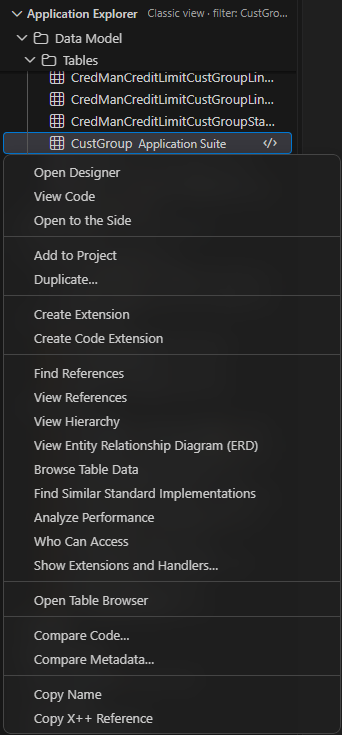
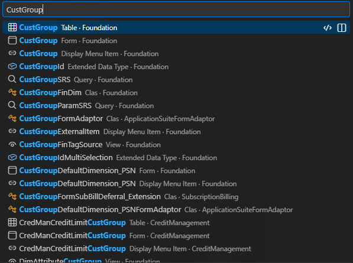
New Element works like Add New Item in Visual Studio and covers every element and extension type. The wizards go further and create complete standard patterns in your model. Each one is all or nothing, and each result compiles without warnings.
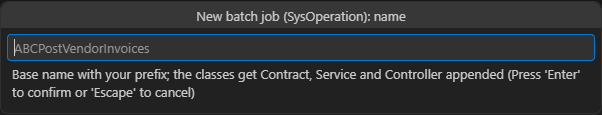
The element designer has a node tree and a properties grid built from
the same metadata classes as Visual Studio's designer, with the same
node order and icons. The properties grid has a filter, categories,
changed values marked, a label picker that finds or creates labels, and
element pickers (Alt+Down).
You can add, rename, duplicate, move and delete nodes, override
methods, and undo and redo with Ctrl+Z and
Ctrl+Y. Copy Event Handler Method puts the
handler code on the clipboard, and Find Event Handlers
lists the existing ones.
Forms get a preview drawn like the web client, with Table of Contents and FastTab patterns, columns and field labels. Elements outside your own models are read-only, and the editor offers Create Extension instead.
The entity relationship diagram lets you choose the depth, direction and fields shown, and exports to SVG or Mermaid. View Dependencies shows what an element uses, from the cross-reference database, and every diagram has Copy Mermaid and Export Mermaid buttons. The label editor shows other languages side by side.
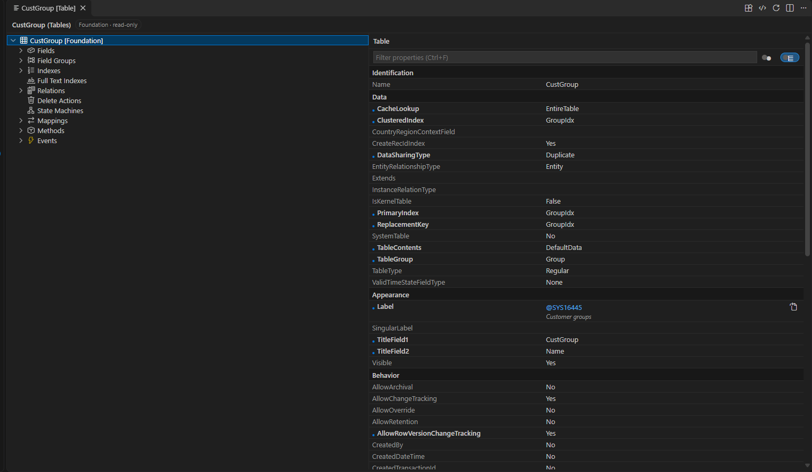
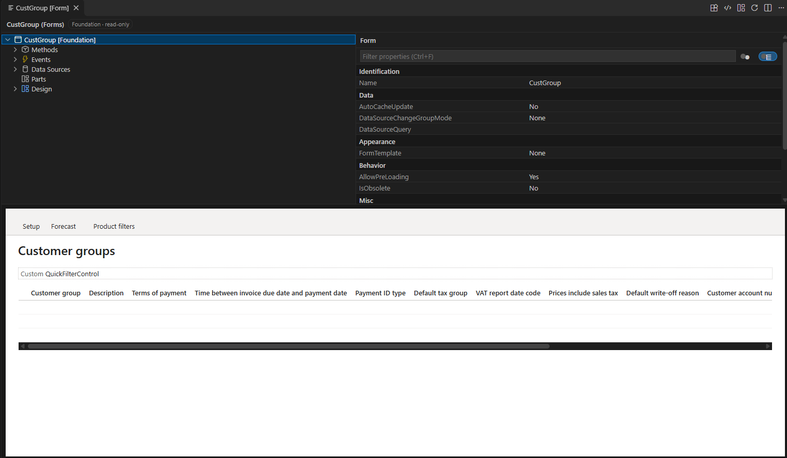
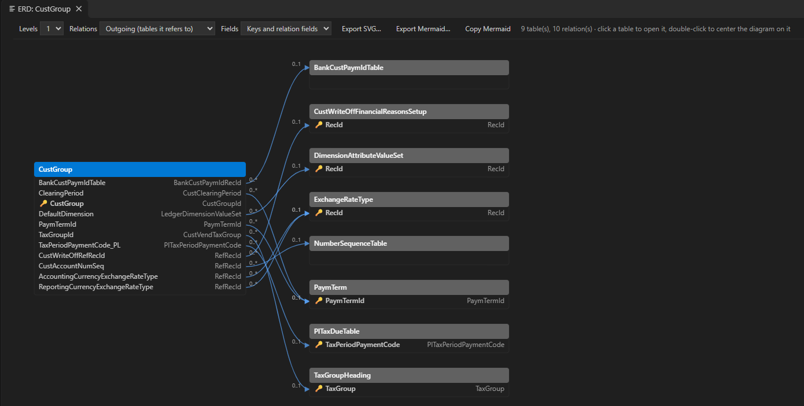
The code view looks the way Visual Studio shows a class: the
declaration first, then the methods inside their braces. You get Go to
Definition and Peek Definition (F12), Find All References
(Shift+F12) through the cross-reference database, hover
with label text and method signatures, and code folding.
Code intelligence adds:
Ctrl+F12),
which lists overrides, Chain of Command classes and methods, and
pre/post and event handlers.. and ::
(including methods added by Chain of Command), for @ labels
and keywords, with signature help.[SysObsolete]
APIs, and Format Document.Ctrl+T),
which finds elements and Class.method.Each feature can be switched on or off with Configure Code Intelligence, which matters on slower machines.
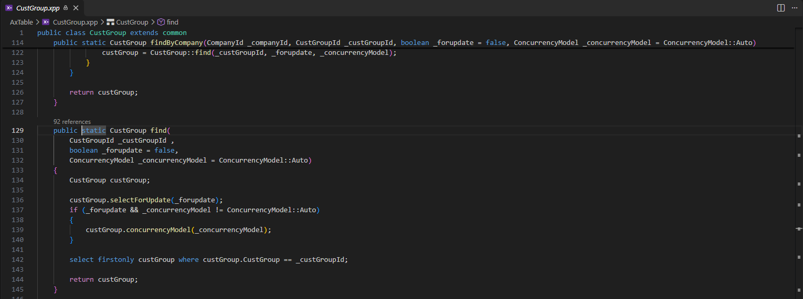
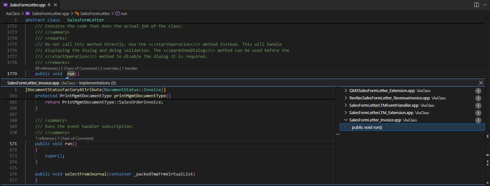
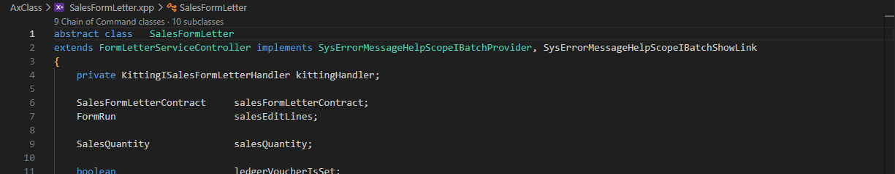
Ctrl+Shift+Alt+F) searches the X++ code of every package,
as text or regex.Ctrl+.): extract to
label, generate find() and exist(), implement
missing interface methods, and create a Chain of Command wrapper.F2) on a method, field or
element of your models updates the code in the refactor preview and the
metadata of your other elements. Renaming a field in the designer works
the same way. Field and element rename are preview.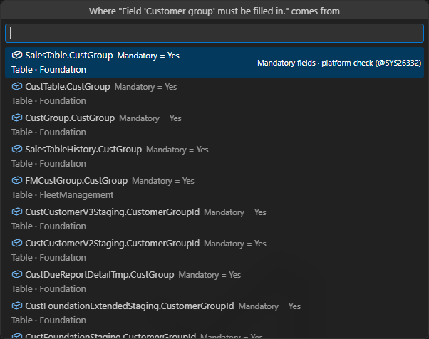
Ctrl+Shift+B in an X++
editor) reports only the project's problems. Build
Model covers the whole model. Errors go to Problems at the
right line, and you can run builds, deploys and database syncs from
tasks.json (the deploy and sync tasks are preview).pac on a UDE.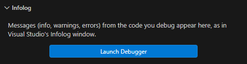
This is one of the biggest differences from Visual Studio.
while select, while select of every
field, forupdate without a write, unbalanced transactions,
unlimited crossCompany, set-based statements that silently
run row by row, missing indexes and cache settings, form data sources
that load every field but show only a few in a grid (OnlyFetchActive),
Delayed or Active data sources shown in the parent's grid instead of
joined, Active links, and data entity readiness problems..etl
trace directly, with no Trace Parser and no import database. It shows
requests on a timeline per AOS and thread, every AOS and session with
its user (other users, dual-write and OData integrations, batch), errors
and exceptions with the full X++ call stack, call trees, hot methods,
SQL per method and pauses. Every method is one click from its code.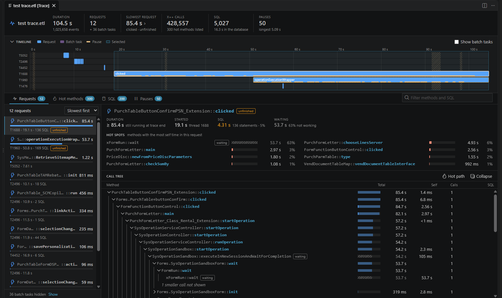
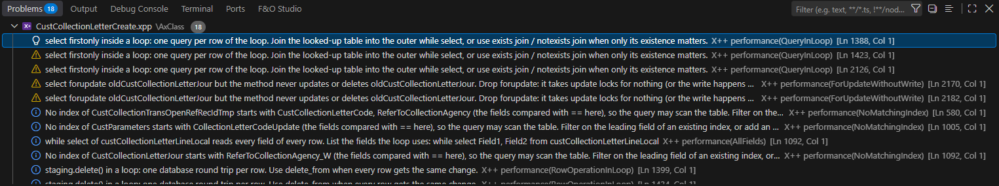
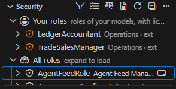
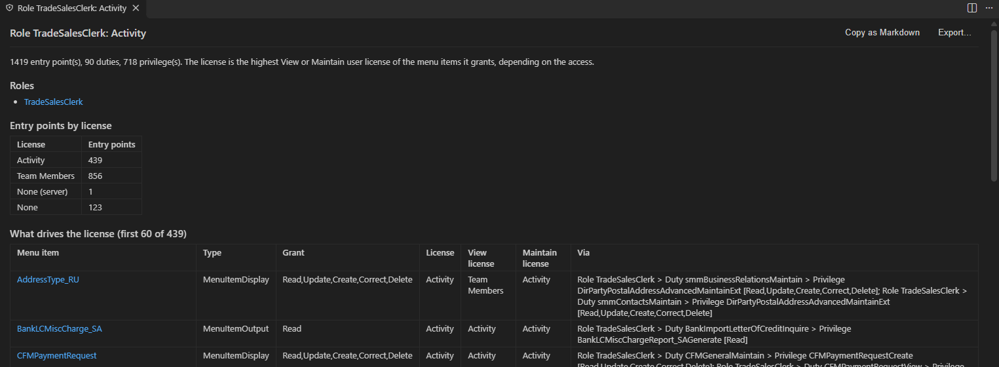
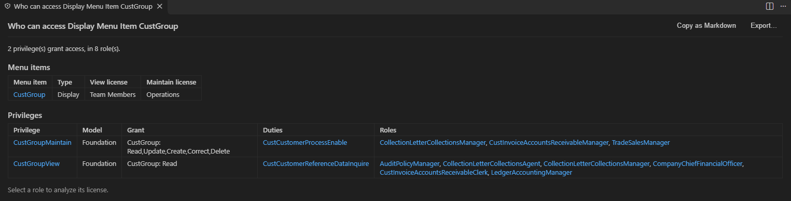
[SysObsolete] APIs with the replacement the attribute
names, Chain of Command wrappers, event handlers and extensions that no
longer match the installed application, and collisions with other
models' extensions.#id (or AB#id on GitHub) to
the commit message, Open Work Item and Open
Pipelines open them, and Review My Changes lists the branch's
work items.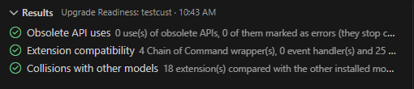
Try Data Entity (OData) and Try Service
Operation call the active environment and save each request as
an .http file. Service calls ask first, and the access
token is never written to the file. Both are marked preview.
Connect to Environment downloads the metadata, restores the cross-reference database and configures the machine for a UDE. It shows each step and can retry a failed one. Select Environment switches environments without a reload, and each workspace remembers its own, so two windows can work against two environments.
A version drift guard warns when the environment runs a newer application version than the metadata on your machine, and Open Team Repository clones a repository, links its packages and builds them in dependency order. Both are marked preview.
Cloud-hosted and VHD environments need no connection step. F&O Studio uses the local PackagesLocalDirectory, AOS and AxDB.
GitHub Copilot works in F&O Studio as it does anywhere in VS Code, but the extension also registers 33 MCP tools that Copilot, or any MCP client, can call to read, create, extend, validate, build and package elements through the metadata API.
The point is that the agent is not guessing at XML files. It works on the same objects the designers use, and there are guardrails:
xpp_find_examples.The tools go beyond writing code. The agent can search all code, find references with the calling code, analyze security and licenses, find the code behind an error message, analyze traces and upgrade impact, run tests, create a deployment package and open an element in the editor at the right line. It can run one read-only, row-limited SELECT after you confirm it, and it never sees credentials.
For control, there are four features I would not work without:
.xpp/agent-rules.md adds
your naming, prefix and pattern conventions to the instructions of
everyone working in the repository.In Copilot Chat, @fno has six commands:
/design, /extend, /explain,
/review, /support and
/performance.
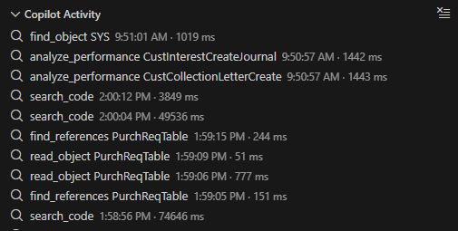
Requirements
pac), for deploy and database sync
on a UDE.@fno and the agent tools.Install
Search for F&O Studio in the VS Code Extensions view, or run
code --install-extension MNazmi.xpp-vscode.
First steps
Ctrl+Alt+O), build
(Ctrl+Shift+B), browse data, or ask Copilot in agent mode.
Start a Copilot checkpoint first if you want to be able to revert.A typical flow
pac.The same flow works with Copilot in agent mode, with a checkpoint set first and the scope limited to your model.
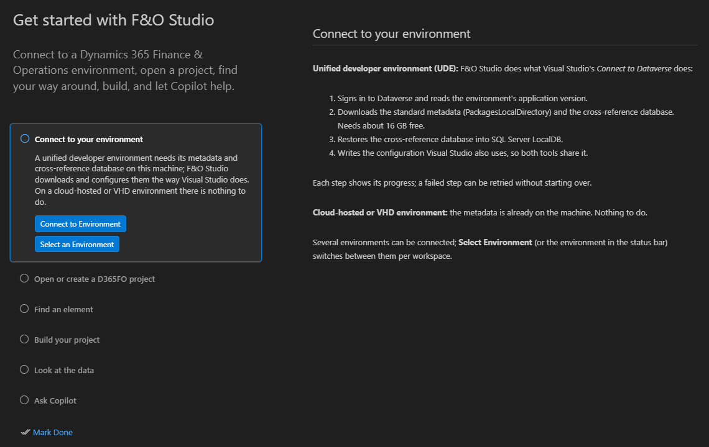
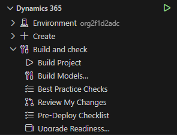
F&O Studio is a preview. Some features have not yet been verified end to end on a live environment: the version drift guard, Open Team Repository on a real team repository, Try Data Entity and Try Service Operation, Verify Changes in the Running App, the deploy and database sync tasks, debugging on cloud-hosted and VHD environments, and the full rename flow for fields and elements inside VS Code.
The two gaps in the comparison are the SSRS report designer and running tests on cloud-hosted and VHD environments.
If something breaks, use Report a Problem in the command palette. It builds a redacted diagnostics bundle for you to preview and send yourself, and nothing is sent automatically. You can also open an issue on GitHub.
I would like to hear what you try it on, and what is missing for your team.
F&O Studio is an independent project and is not affiliated with or endorsed by Microsoft. Dynamics 365 is a trademark of Microsoft Corporation.
Yes means available. Partly means available another way. No means not available. Items marked preview are built but not yet verified on a live environment.
| Feature | F&O Studio | Visual Studio |
|---|---|---|
| Cost and platform | ||
| Free and open source (Apache 2.0) | Yes | No |
| No Visual Studio license needed | Yes | No |
| Unified developer environments (UDE) | Yes | Yes |
| Cloud-hosted and VHD environments | Yes | Yes |
| Application Explorer and projects | ||
| Classic view (elements by type) | Yes | Yes |
| Model view (elements by model) | Yes | Yes |
| Name filter | Yes | Yes |
| Open Element with recent elements | Yes | No |
| Type prefixes in Open Element (t:, c:, f:) | Yes | Partly (metadata search syntax) |
| Create Extension from the context menu | Yes | Yes |
| Create Code Extension (Chain of Command) | Yes | Yes |
| Drag and drop elements into designers | Yes | Yes |
| Projects (.rnrproj) | Yes | Yes |
| Import and export projects (.axpp) | Yes | Yes |
| Git change markers on project items | Yes | Yes |
| Create and update models | Yes | Yes |
| View model dependencies | Yes | Yes |
| Create elements | ||
| New Element (Add New Item) | Yes | Yes |
| Batch job wizard (SysOperation) | Yes | No |
| Report wizard with a ready-to-run design | Yes | No |
| Approval workflow wizard | Yes | No |
| Custom service wizard | Yes | No |
| Business event wizard | Yes | No |
| Number sequence wizard | Yes | No |
| Feature management wizard | Yes | No |
| Table + form + menu item + privilege wizard | Yes | No |
| Data entity wizard | Yes | Yes |
| Designers | ||
| Element designer with node tree | Yes | Yes |
| Properties grid with categories and search | Yes | Yes |
| Changed property values marked | Yes | Yes |
| Label picker that finds or creates labels | Yes | Partly (lookup only) |
| Undo and redo in the designer | Yes | Yes |
| Copy event handler method | Yes | Yes |
| Find event handlers | Yes | Yes |
| Form preview like the web client | Yes | Yes |
| Click a section or control in the preview to select it in the designer | Yes | Yes |
| SSRS report designer | No | Yes |
| Label editor | Yes | Yes |
| Entity relationship diagram (SVG and Mermaid export) | Yes | No |
| Class and table hierarchy diagram | Yes | Partly (DGML) |
| Dependency diagram | Yes | Yes (DGML) |
| Code editor | ||
| Code view with declaration and methods | Yes | Yes |
| Syntax highlighting | Yes | Yes |
| Code folding | Yes | Yes |
| Completion (IntelliSense) | Yes | Yes |
| Completion of methods added by Chain of Command | Yes | Yes |
| Signature help | Yes | Yes |
| Hover with label text | Yes | Yes |
| Go to definition | Yes | Yes |
| Find all references (cross-reference database) | Yes | Yes |
| Go to implementations, including CoC and event handlers | Yes | No |
| Code lens with references, CoC classes and subclasses | Yes | No |
| Call hierarchy | Yes | No |
| Type hierarchy | Yes | No |
| Outline and breadcrumbs | Yes | Partly (navigation bar) |
| Syntax errors while typing | Yes | Yes |
| Format document | Yes | Yes |
| Code snippets | Yes | Yes |
| Quick fix: extract to label | Yes | No |
| Quick fix: generate find() and exist() | Yes | No |
| Quick fix: implement interface methods | Yes | No |
| Quick fix: create a CoC wrapper method | Yes | No |
| Rename a method and its calls | Yes | No |
| Rename a field and its references | Yes (preview) | No |
| Rename an element and its references | Yes (preview) | No |
| Search | ||
| Metadata search | Yes | Yes |
| Search code in all packages (text or regex) | Yes | Partly (Find in Files) |
| Find labels | Yes | Yes |
| Find tag references | Yes | Yes |
| Find Message Source (paste an error, find the code) | Yes | No |
| Find similar standard implementations | Yes | No |
| Build, deploy, debug and test | ||
| Build project | Yes | Yes |
| Build model | Yes | Yes |
| Compiler errors at the right line | Yes | Yes |
| Build from tasks.json | Yes | No |
| Deploy and database sync from tasks.json | Yes (preview) | No |
| Best practice checks (xppbp) | Yes | Yes |
| Create deployment package | Yes | Yes |
| Deploy models to a UDE | Yes | Yes |
| Database synchronization | Yes | Yes |
| Warning when the build is newer than the deploy | Yes | No |
| Debugger on UDE | Yes | Yes |
| Debugger on cloud-hosted and VHD environments | Yes (preview) | Yes |
| Infolog | Yes | Yes |
| Run SysTest tests on the environment | Yes | Yes |
| Run tests on cloud-hosted and VHD environments | No | Yes |
| Generate a SysTest class | Yes | No |
| Generate test data with the Acceptance Test Library | Yes | No |
| Run a snippet of X++ on the environment | Yes | Partly (startup object) |
| Data | ||
| Temporary SQL credentials for UDE | Yes | Yes |
| Browse table data in the IDE | Yes | No |
| Record inspector that follows relations | Yes | No |
| SQL editor, read-only by default | Yes | No |
| Query plan (Explain Plan) | Yes | No |
| Open the database in SSMS | Yes | No |
| Open the table browser in the web client | Yes | Yes |
| Performance | ||
| Analyze .etl traces without an import database | Yes | No |
| Errors with full X++ call stacks from a trace | Yes | No |
| Trace Parser | No | Partly (separate tool) |
| Static performance analysis of X++ | Yes | No |
| Form data source checks (OnlyFetchActive, link types) | Yes | No |
| Database performance insights | Yes | No |
| Application Insights (KQL) queries | Yes | No |
| Security and licensing | ||
| Security view with the license of each role | Yes | No |
| License analysis of a role, duty or privilege | Yes | No |
| Who Can Access an element | Yes | No |
| Find security gaps | Yes | No |
| Segregation of duties check | Yes | No |
| Security report for sign-off | Yes | No |
| Upgrades, review and release | ||
| Upgrade readiness (obsolete APIs, broken extensions) | Yes | No |
| Collisions with other models' extensions | Yes | No |
| Standard code drift of wrapped methods | Yes | No |
| Review My Changes against a branch | Yes | No |
| Pre-deploy checklist | Yes | No |
| Compare code | Yes | Yes |
| Compare metadata | Yes | Yes |
| Links to Azure DevOps work items | Yes | Yes |
| Links to Azure DevOps pipelines | Yes | No |
| Labels | ||
| Translate missing labels | Yes | No |
| Find unused labels | Yes | No |
| Import and export labels | Yes | No |
| Integration | ||
| Try a data entity (OData) | Yes | No |
| Try a service operation | Yes | No |
| Environments | ||
| Connect to a UDE (metadata, cross references, configuration) | Yes | Yes |
| Retry a failed setup step | Yes | No |
| Switch environments without restarting | Yes | No |
| A different environment in each window | Yes | No |
| Warning when the environment's version is newer | Yes | No |
| Open a team repository and build its packages | Yes | No |
| AI | ||
| GitHub Copilot chat and completions | Yes | Yes |
| X++ agent tools on the real metadata (33) | Yes | No |
| @fno chat participant | Yes | No |
| Checkpoints to revert Copilot's changes | Yes | No |
| Scope that limits what Copilot may change | Yes | No |
| Activity log of every agent tool call | Yes | No |
| Team rules for the agent | Yes | No |
| Read-only SQL for the agent, after your confirmation | Yes | No |